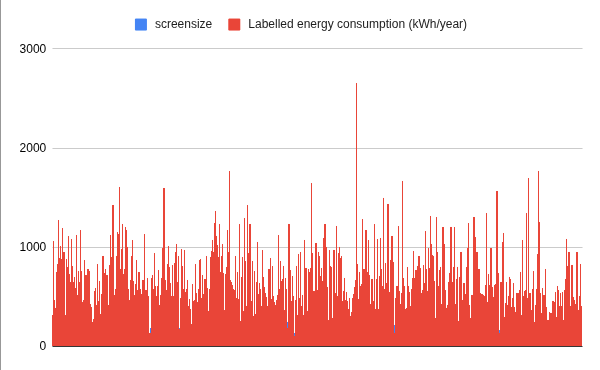

Television Energy Consumption
Modern televisions vary widely in their energy efficiency based on screen size, display technology, and resolution. For everyday consumers and families, upgrading to a larger TV often comes with a hidden cost: a much higher annual electricity bill.
Data Insight: The Cost of Going Big
Audience: Budget-conscious families looking to purchase a new television.
When walking into an electronics store, it is tempting to buy the largest screen available. However, our analysis of the Australian television market reveals a sharp, undeniable trend: as screen size increases, energy consumption skyrockets.

Figure 1: Comparison of Television Screen Size vs. Annual Energy Consumption.
What does this mean for you?
If you are upgrading from a standard 50-inch TV to a massive 75-inch or 85-inch display, you aren't just paying more at the checkout counter—you will be paying significantly more on your energy bill every single quarter. By finding a "sweet spot" in screen size (around 55 to 65 inches), families can enjoy a cinematic experience without unnecessarily draining household power.